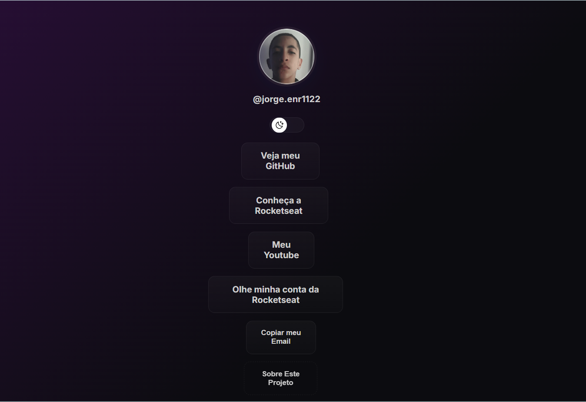

Apresentação Simples
Meu nome é Jorge Enrique, tenho 12 anos e sou um jovem apaixonado por tecnologia.
Desde cedo descobri que a programação é uma forma de mudar vidas,
e por isso estudo todos os dias HTML, CSS e JavaScript para me tornar
um desenvolvedor cada vez melhor.
Acredito que começar cedo é o segredo para conquistar liberdade e
estabilidade no futuro. Meu objetivo é construir soluções inovadoras,
desenvolver projetos que ajudem pessoas e mostrar que dedicação e
disciplina podem transformar sonhos em realidade.
Quando não estou estudando programação, também gosto de aprender sobre
investimentos, andar de bicicleta e buscar novas formas de evoluir como pessoa.
Estou sempre focado em dar o meu melhor, sem esperar a “hora certa”,
porque acredito que o momento certo é aquele em que você começa.
Projetos
🌐 Linktree
Um site simples para reunir links importantes em um só lugar. Feito com HTML e CSS, focado em design responsivo.
